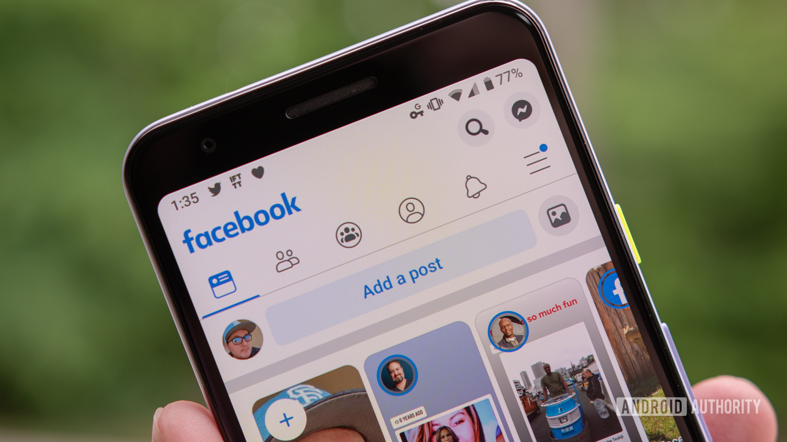
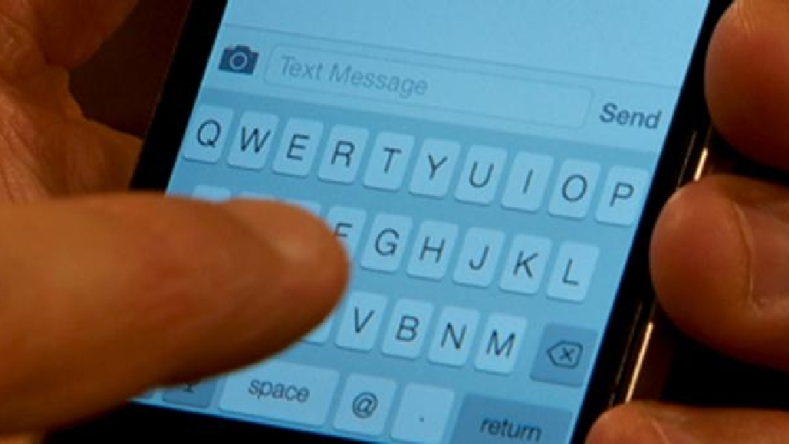

It all started in 2014.I got admitted in a new school with one of my close friend. My friend often skipped school.So i was kind of lonely and had make some new friends.
One day one of my new friend from the school introduced me to her at the corridor. This where the story starts.When i first looked at her, she was a chubby girl looking at me and kind of smiling. I was to shy to say even a "hi" to her.I had zero experience with girls. After that the awkward meeting ended.I liked the way she smiled at me. We were in the same class but in different sections. When ever i saw her i watched her for distance never had the balls to talk to her. She finished school in 2016 but i did in 2017. Because i could not attend the final term exam in 2016.
One day late in 2017 in was using facebook and suddenly saw her profile in it.It made me happy for somehow.So i send her a friend request. She accepted my friend request.So i texted her and later found out she didn't remembered me.It sucked.We both got admitted in different colleges.I texted her once or twice in every month.We became friends. After a couple of months i saw her selfie with her boyfriend on facebook, but she never told me that she had a boyfriend.I was sad and frustrated. But i never showed her that i had more interest than being just friends with her. At the end of 2018 they broke up.I texted her after that but she didn't replied to my text too much.We started texting each other less and less.
After a while i saw her a post of pudding on her facebook day. So i commented some thing like "ohh that looks delicious and you didn't even invite me to taste it".She asked me to meet after her college. that she offered me a treat instead of that pudding. I was kind of shocked and happy at the same time because going to see her after a long time.I asked for her number and she gave it to me. The meeting date was 11th september 2019. That day i was 1 hour late when i arrived at her college location. So i called her she told me she was standing on the other side of the road. I crossed the road and went close to her.When she saw me she waved at me and said "hi".I said "hi" to her as a reply.Then we went to a restaurant. We were sitting in front of each other.She ordered a pizza.The whole time i was watching her and she noticed that.We started chatting, we continued chatting for almost 3 hours.I gave her a small gift.It was a turtle.In the middle of the conversation i found out she was stalking my facebook id and read the whole facebook conversation first to last before meeting me.The whole chatting with her was fun and i laughed a lot when i found out she was checking on me.Then we said good bye to each other. From that i knew she was interested in me.After that we texted each other more than ever.Two days later on 13th september i shared my feelings with her and she accepted my feelings for her.
26th september was our 2nd meeting and also 1st date.That i was late too she was waiting for me beside a foot over bridge.I called her few times and searching for her it was in evening and she was kind of scared.I bought some roses for her.After i found her i gave her roses. She was nervous to take the roses in the public place.We went to a coffee shop.Before that on the way i bought her some balloons.Those were small balloons with sticks.I ordered two cold coffees.We were chatting and laughing.I was watching her the whole time like the 1st day.It always made her uncomfortable.When leaving the coffee shop we were playing balloons fight.I really enjoyed that.
It's been almost 8 months for our relationship.Last 4 months we had been fighting like crazy and the fight must go on.
Tell us your thoughts about this story.
Rate the story